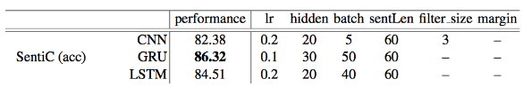
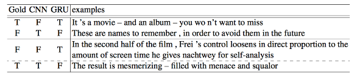
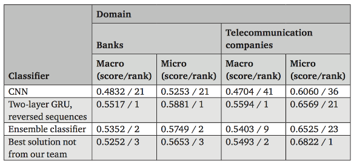
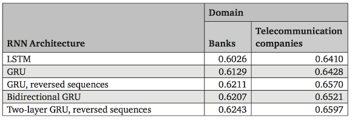
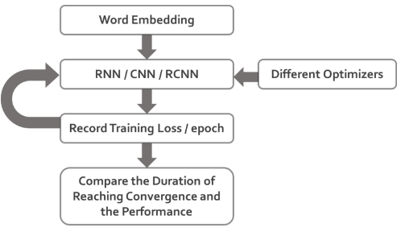
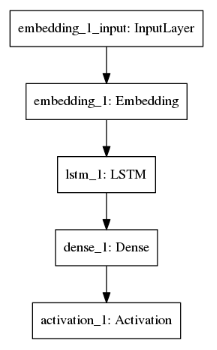
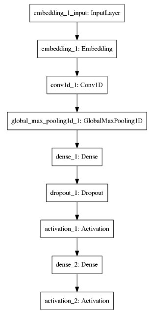
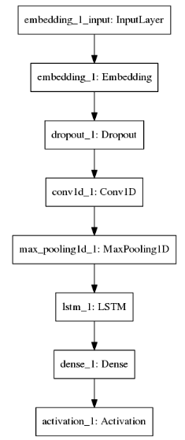

优化器八仙过海
Table of Contents
本文灵感源自于 MLDS 课程第二个练习 — Sentiment Analysis, 参见这里.
| 数据集 | 数据量 | 模型 | 优化器 | CPU | GPU | 用时 |
|---|---|---|---|---|---|---|
| IMDB review | 50000+ | 3 GRU layers | Adam | i7-6700 @ 3.40GHz*8 | 1060 4G | 5min+ |
我的疑问是:
- Adam是不是过誉了? Adam很常是训练类神经网路的预设方法, 但这篇文章说在训练 generative adversarial network时Adam表现不佳. Adam收敛快, 但Adam所能达到的准确率上限, 跟其他几个optimizer (SGD, AdaGrad, RMSProp, NAdam…..)比起来, 到底孰高孰低? 还是能到达的上限其实相同, 只差在训练时间? 原本使用RMSprop, 或是Adam 的地方, 改用Nadam 是否可以得到更好的结果?
- 在train GRU的时候, 可用多种不同的optimizer, 其中RMSProp、Adam常被使用. 作业二我 原本使用的是 Adam, 如果换成 SGD 或者 RMSProp 会变更好或更差? 为什么?
- RNN vs CNN的抽出的sentence representation高低若何? 在做句子分类上两种model都能有效的去模拟出句子的表示向量, 但使用哪种model所做出的向量能更好的表示这句话的意思呢?
- 哪个更适合文本分类：CNN或RNN?
导言
在Natural Language Processing（NLP）的分类问题上, CNN/RNN model 究竟孰优孰劣? 除此之外, 针对不同model选择optimizer时, Adam始终都是是最合适的吗? 在本篇讨论中, 我试图以IMDB Movie Review Sentiment Task作为评估的标准, 并使用不同的模型架构与 optimizer, 比较彼此间的差异（loss / accuracy）与收敛时间的不同.
因为自然语言是序列表示且具有前后相依性, 过去在NLP上的task通常都是使用RNN做为主要的modeling模型. 且RNN在各个NLP的task上（POS tagging, NER, sentiment analysis… etcs. ）, 对于performance都有着高度且显著的提升效果. 但根据1的结果显示, CNN 在某些task上(Question Answer Selecting)的结果可以打败RNN中的GRU/LSTM model. 在文献 2 中, 当改进CNN的Embedding方式后, 在Sentiment analysis的task下, 其 performance也高过传统RNN的方式.
因此我想针对Sentiment Analysis的这个作业, 探讨其在使用CNN/RNN/CRNN三种不同架构之下, 哪种架构抽出来的feature, 最能使后续fully-connected layer做出较佳的分类结果.
除此之外, 因为在CNN/RNN/CRNN三种架构下最适合的optimzer也不尽相同, 因此我也尝试 (SGD with/without momentum, RMSProp, Adagrad, Adam)在三个架构中的performance以及收敛速度/收敛曲线.
相关文献及研究
2.1 用于自然语言处理的CNN和RNN的比较研究
在这篇paper中1, 与我的work相关的主要是对于Sentiment Classification (SentiC) on Stanford Sentiment Treebank (SST) dataset的分类, 然而在本篇paper的比较中, 并没有固定整体参数量, 也未对不同的optimizer进行比较. 从图一中可以看到, 以 CNN/GRU/LSTM针对SentiC dataset做分类时, GRU达到的效果最佳. 然而因hidden-layer与 batch-size的部分也并未固定, 因此难以评断GRU即为最佳的预测模型.

Figure 1: 不同模型中针对SentiC的准确度比较
从图二中可得知, CNN与GRU对于语意的分析各有其优缺点. 对CNN来说, 对于讽刺性话语 (eg:These are names to remember , in order to avoid them in the future)、以反义字表示肯定的评论(eg:You won't want to miss)判别力较差, 而对于较为直接的叙述则能够判断得较好, 对于GRU而言则是较能判断较长语句的句义, 不会在看到won't或miss时视为负面评论.

Figure 2: CNN与GRU对于Sentiment Classification的比较结果
2.2 俄语推文情感分析的神经网络架构比较
在这篇文献3中, 比较了RNN(paper中采用GRU架构)、CNN和较为简易的SVM模型, 在所收集的Twitter dataset上的语意分析, 分为负面(negative), 中性(neutral)与正面 (positive)三种分类. Training datasets包含大约9,000则Twitter消息,而testing datasets包含大约19,000则消息), preprocessing的部分则是使用word2vec转换出的 vectors作为training features.

Figure 3: paper中针对2016 SentiRuEval比赛中dataset的F1-score与排名
针对2016 SentiRuEval的dataset分析结果如图三所示, 参与的十队中设计了58种training model与方法, 而将语句倒序后, 再使用two-layer GRU训练的模型有最佳的performance.
除此之外也可从图四中看出, 将语句倒序后再使用two-layer GRU训练的RNN架构之 performance优于LSTM、GRU、bidirectional GRU的结果. 若不使用word2vec单纯只用 one-hot encoding vector训练的话准确度仅有0.45(for Banks domain)和0.47(for telecommunication companies domain).

Figure 4: paper中针对2016 SentiRuEval比赛中dataset的Macro-averaged F1-score
2.3 其他文献
以RNN做sentence classification
Opinion Mining with Deep Recurrent Neural Networks Irsoy & Cardie, 2014 4
本研究中用实验证明使用Deep RNN(more layers)在opinion mining的问题上比Wide RNN(more neurons)以及以往的state-of-the-art的semiCRF模型表现更佳.
Opinion Tagging Using Deep Recurrent Nets with GRUs Adamson & Turan, 2015 5
本研究以实验结果检验Vanilla Relu RNN以及GRUs在各种sentence classification problems上的performance, 实验结果证明两者在各有擅长的classification problems, 但 GRUs的平均表现比较优良.
以CNN做sentence classification和sentence modeling
A Convolutional Neural Network for Modelling Sentences Kalchbrenner et al., 2014 6
本研究针对研究句子的语义模型, 提出一个新的模型Dynamic Convolutional Neural Network (DCNN). 在模型网路中的的不同层(layers)中, 同时采用一维的convolutional layer和dynamic k-max pooling layers. 也因为这样可自由调整网路结构(network structure)的特色, 本模型可以处理不同长度的语句序列, 并在该研究中所选用的三个 dataset上皆有突出的表现(Sentiment Prediction in Movie Reviews, Question Type Classification, Twitter Sentiment Prediction with Distant Supervision).
Convolutional Neural Networks for Sentence Classification Kim, 2014 7
这篇paper中主要以CNN model, 对pre-trained word vector做句子(sentence-level)的分类问题, 而其中会透过grid search , 并针对SST-2 dev dataset选取以下的CNN model参数： rectified linear units , filter windows, dropout rate, l2 constraint, 和 mini-batch size.
上述提及之先前研究, 较未有同时比较model与optimizer交互关系的讨论, 故后续的实验计中将针对这部份多所著墨.
实验设计
由于在上述提及之Sentiment Analysis上RNN与CNN的结果并未差异许多1, 2, 且并没有考虑选择不同optimizer之比较, 故我选择IMDB Movie Review Sentiment Analysis做为比较CNN/RNN表现的task.
由于参数量的多寡会直接影响模型的complexity, 我固定RNN/CNN/RCNN后所接的 fully-connected layers, 并限制RNN/CNN/RCNN的参数, 使整体参数量固定, 以做为 performance时的准则, 除model/optimizer外, 尽可能固定会影响training结果的其他变因.
3.1数据集
IMDB Movie Review Sentiment Dataset
资料中包含一段句子, 以及该句子的正负面情绪. (positive : 1/ negative: 0) 其中以 25000笔热门电影评论作为training set,10000笔作为validation set, 而15000笔则作为 testing set.
| 训练集 | 25000 |
| 验证集 | 10000 |
| 测试集 | 15000 |
| 平均训练数据长度 | 238.71364 |
| 平均测试数据长度 | 230.8042 |
| 词汇量 | 88585 |
在这样的dataset上RNN based的模型是否能记住较为遥远的历史讯息CNN在看到文章中的某句强力语意的句子后是否能根据该句子抽出对应的features. 除此之外, 在Keras上有已经做过pre-processing 的data, 故在研究后续model和optimizer间的关联时, 能够省略前置步骤, 在研究final project的有限时间中较为便利.
3.2测试流程
将Sentences做完Embedding后(我使用Keras内建的embedding layers, 使用方式参阅
https://keras.io/layers/embeddings/), 输入各个参数量一样的模型后, 用不同的
Optimizers做training, 记录下各个training flow的 conv.epoch (到哪个 epoch 时
loss 会收敛), training loss/accuracy, validation loss/accuracy 与 testing
accuracy , 最后比较不同参数设定下的收敛时间及收敛后的预测结果, 整体实验流程如图五所示.

Figure 5: 实验整体流程
3.3模型结构
- RNN(LSTM)
- CNN(MaxPooling)
- RCNN(LSTM)
不同的model structure如下面图六-图八所示：
| RNN (LSTM) Model Structure | CNN Model Structure | RCNN (CNN+LSTM) Model Structure |
|---|---|---|
|  |  |  |
使用上述模型抽完feature后, 最后通过一个(n, 1)的full connected layers, 并通过
softmax activation function 来预测结果.
实验结果
使用CNN/RNN/RCNN中不同模型架构, 并搭配不同optimizer的实验结果如下述表一所示. 因有设定early-stopping, 因此training过程在无法继续收敛时会自己停下来, 此时的epoch 数记为表一中的convergence epoch(Conv. epoch), 因此若 convergence epoch数字越小代表越早收敛, 数字越大代表越难收敛. 我的code放在github 上, 如8.
EarlyStopping 设置：
EarlyStopping(monitor='val_loss', min_delta=0.01, patience=5, verbose=0, mode='auto')
| Model | Optimizer | Conv.Epoch | Loss | Train_acc | Val_loss | Val_acc. | Test acc. |
|---|---|---|---|---|---|---|---|
| RNN | Adam | 15 | 0.0087 | 0.9974 | 1.1576 | 0.8128 | 0.8042 |
| RNN | RMSprop | 13 | 0.0729 | 0.9744 | 0.6674 | 0.8227 | 0.8176 |
| RNN | SGD + no momentum | 48 | 0.1076 | 0.9346 | 0.9816 | 0.8003 | 0.7964 |
| RNN | SGD+ momentum=0.1 | 25 | 0.4170 | 0.8125 | 0.4030 | 0.8156 | 0.8067 |
| RNN | SGD+ momentum=0.2 | 24 | 0.4170 | 0.8225 | 0.4030 | 0.8256 | 0.8234 |
| RNN | Adagrad | 11 | 0.1009 | 0.9672 | 0.5751 | 0.8251 | 0.8286 |
| CNN | Adam | 7 | 0.0216 | 0.9924 | 0.6787 | 0.8572 | 0.8630 |
| CNN | RMSprop | 8 | 0.0315 | 0.9902 | 0.4744 | 0.8865 | 0.8871 |
| CNN | SGD + no momentum | 35 | 0.6915 | 0.6705 | 0.6922 | 0.6788 | 0.6729 |
| CNN | SGD+ momentum=0.1 | 37 | 0.1556 | 0.9416 | 0.3292 | 0.8664 | 0.8782 |
| CNN | SGD+ momentum=0.2 | 36 | 0.1665 | 0.9373 | 0.3125 | 0.8740 | 0.8823 |
| CNN | SGD+ momentum=0.3 | 28 | 0.1866 | 0.9287 | 0.3863 | 0.8481 | 0.8537 |
| CNN | Adagrad | 8 | 0.0246 | 0.9968 | 0.4000 | 0.8796 | 0.8825 |
| RCNN | Adam | 12 | 0.0089 | 0.9973 | 0.9724 | 0.8291 | 0.8361 |
| RCNN | RMSprop | 14 | 0.0063 | 0.9981 | 0.9749 | 0.8347 | 0.8384 |
| RCNN | SGD+ no momentum | 23 | 0.6928 | 0.5143 | 0.6927 | 0.4978 | 0.6896 |
| RCNN | SGD+ momentum=0.1 | 37 | 0.1793 | 0.9317 | 0.5428 | 0.8109 | 0.8202 |
| RCNN | SGD+ momentum=0.2 | 29 | 0.2211 | 0.9123 | 0.3616 | 0.8470 | 0.8542 |
| RCNN | Adagrad | 12 | 0.0041 | 0.9995 | 0.8607 | 0.8359 | 0.8347 |
目前针对此dataset, 能够呈现最佳预测结果的选项为 CNN+RMSprop .
讨论
对于上述实验结果的讨论与分析如下：
RNN vs CNN vs RCNN
在Convergence Epoch的 column 中, 比较数值后可以发现CNN是当中收敛最快速的, 其次是 RCNN, 最后是RNN. 我认为这是因为CNN在各个Convolution层的gradient计算是平行的, 因此从label传递通过的layer数量会比RNN、RCNN少, gradient对前面的conv. layer影响力较大, 因此收敛最快. 其次在RCNN中RNN的部分虽然会通过较多layer, 然而有CNN的layer抽取 feature的情况下, 收敛速度还是比RNN快.
而在Train/Validate/Test accuracy的 column 里, CNN/RCNN的Train accuracy在除了SGD
的其他optimizer下都能达到 0.99 的 acc. , 但是在 Val. 和 Test acc. 下CNN
的表现都胜过RCNN . 我认为这是因为RCNN的复杂度对于IMDB这个task下过高, 且在这个
task下我猜测在看见某些有强力sentiment的句子后抽出的feature能dominate prediction
的好坏(例如： this movie is 'fresh' ), 在CNN的架构下可以在抽出这个语句的
feature后传递给full-connected层, 然而在RCNN的架构下, 抽出来的feature在经过
recurrent的传递时有可能会丢失了这样的资讯(如Gradient Vanishing), 又因为RCNN本身模型的complexity较高, 才会有RCNN在 train acc. 很高但是在 test acc. 比CNN差的结果. 另外在RNN的架构下, 因为有可能遗忘较长远以前的资讯, 在 test acc. 表现又比
CNN、RCNN差.
Differernt Optimizaer

Figure 6: 课件截图: Adagrad
从上图中的Adagrad式子中可以得知, Adagrad对Learning rate项基于过去所有gradient项的总和做了平方项和后开根号的调整. 直觉上的想像就如同图中右上的error space视觉化, 在某段时间的gradient会考虑过去所有该项的gradient(须注意此处过去的gradient权重都相等).

Figure 7: 课件截图: RMSProp
另外, 从上图的RMSprop式子中, 可以看出RMSprop以及Adagrad的差异在于, RMSprop对于 learning rate的修正项, 对于较久以前的gradient项因为多次的alpha乘积后, 对于某处 learning rate的影响力会比较接近的gradient小. 直觉上的想像是跟Adagrad一样是根据历史中的gradient修正learning rate大小, 然而在RMSprop中比较新的gradient对修正项影响力会比旧的gradient大.

Figure 8: 课件截图: Adam 算法
最后是Adam的algorithm, 是RMSprop加上momentum的演算法. 因为考量了历史的gradient以及momentum, 通常Adam都能给予较好的收敛曲线.
为什么RNN中选择的Adagrad?
在实验结果中, RNN@Adagrad > RNN@RMSprop > RNN@Adam . 我认为这是由于RNN的
error surface 非平即陡 造成的:

Figure 9: error surface of RNN
在更新gradient时若采用momentum based的optimizer时, 有可能因为突然加大的gradient 造成往后的更新都被这次的更新方向影响(飞出去了), 因此Adam在RNN的结果表现最差. 而Adagrad因为对历史纪录中的gradient L2 regularization权重相同, 尽管在遇到极大的 gradient, 也会因为参考了历史中所有的gradient而不过度修正learning rate, 因此表现比有可能被极大gradient dominate的RMSprop来得好.
为何选择CNN的RMSprop?
在CNN的实验中, CNN@RMSprop > CNN@Adam > CNN@Adagrad ≈ CNN@SGD 我分析后认为这样的结果应该是来自SGD本身更新时虽然每次根据一笔data更新很有效率, 加上momentum后等同参考了以往的历史讯息, 而能得到好的结果. 但在CNN的情况下RMSprop为最佳的
optimizer, 我认为是同时使用了RMS + momentum在这个task下会过度fit CNN的model(如果看Adam的train acc.和test acc.话, 可以发现有比其他optimizer更大的overfitting的状况)；另外因为CNN的error space应不如RNN的error space颠簸, 故RMSprop结果比Adagrad
好.
为什么CNN在这项任务中表现更好?
在IMDB的这个task下, CNN > RNN > RCNN 的表现比RNN以及RCNN好. 而这样的结果我认为应该和我的推测相同：对于一则280字数的评论, 能够判断这则评论是正向/负向的特征可能只需要几句话. 因此, 在CNN 平行抽取特征 的结构下, 可以有效的辨识出正负向的句子；相对的, 在RNN/RCNN的结构下擅长的是从头到尾阅读完文章后再抽特征, 若一篇评论在开头给予了强烈的正/负向特征, 但是文章后半部都是在补充说明的话, RNN/RCNN有可能丢失了开头的特征, 因此CNN在这个task下会是比较适合的模型.
关于破除谣言的部分
如我在前面的讨论提到, 在这个问题下LSTM最适合的是 Adagrad 而不是常见的Adam或
GradientDescent. 因为Error space颠簸的问题, 在training RNN时应该要慎重的选择像
Adam 这样有 momentum 或 RMSprop 这种会根据不同gradient大小调整的optimizer.
RNN vs CNN 何者能更好地表示training sentence的意思呢?
但就本讨论中实验之sentiment task而言, 选用CNN的结果能够提供较好的分类结果, 如同3中的讨论而言, 可能因为corpus中的movie review呈现反讽、反义字表示肯定的评论出现次数较少, 因此CNN能够避免掉误判句义正/负面的情况, 因此呈现较佳的预测结果.
哪个更适合文本分类：CNN或RNN?
根据本讨论中选用的task而言是CNN的成效较佳. 但由于本次的任务在于单纯只是将句义分为正面/负面, 是binary text classification的问题, 因此如果当实际应用到将更多元的 text分类、分出多个标签等相关应用而言, 相较之下问题对各个模型的适合度不同, 也许在短一点的sentence classfication问题上, RCNN/RNN这样sequence based的模型效果就会胜过CNN. 因此我认为在接触一个不知道哪个模型适合的task状况下, 将optimizer以及参数量固定各使用三个模型得到一个初步的结果再决定fine-tune最后决定的模型会是比较好的决定方式.
结论
据以上分析,可以发现在optimizer的整体表现中, SGD的表现最为不佳, 对于选用其他 optimizer的CNN / RCNN model而言, 选用SGD作为optimizer的performance下降非常多. 除此之外, 选用SGD作为optimizer的model收敛的时间也比较长, 如RNN(LSTM)的结果所示, 需要48个epoch才会收敛, 对于RCNN model来说也需要23个epoch才会收敛, 相较于使用其他 optimizer的model来说有显著的差异.
从评估如何选取model structure方面而言, RNN(LSTM)即使在选用SGD作为optimizer的状况下, 于testing set上的accuracy仍未大幅度下降, 可能是因为LSTM本身模型相对稳定且复杂, 故optimizer的选取并不会对整体训练过程造成很大的波动. 然而不管是对于CNN本身, 或是有用到CNN+LSTM的RCNN架构而言, optimizer的选取则会对于训练的过程是否收敛造成很大的影响. 故若想选用较为稳定的model structure, RNN(LSTM)将是首选.
就本task而言, 选择CNN搭配rmsprop作为optimizer的训练架构在testing set上得到了最佳的accuracy, 然而选用CNN搭配Adam、rmsprop、Adagrad作为optimizer的架构皆能得到不错的表现.
Footnotes:
Comparative Study of CNN and RNN for Natural Language Processing https://arxiv.org/pdf/1702.01923.pdf
Semi-supervised Convolutional Neural Networks for Text Categorization via Region Embedding https://arxiv.org/pdf/1504.01255.pdf
Comparison of Neural Network Architectures for Sentiment Analysis of Russian Tweets http://www.dialog-21.ru/media/3380/arkhipenkoetal.pdf
Opinion Mining with Deep Recurrent Neural Networks https://www.cs.cornell.edu/~oirsoy/files/emnlp14drnt.pdf
Opinion Tagging Using Deep Recurrent Nets with GRUs http://cs224d.stanford.edu/reports/AdamsonAlex.pdf
A Convolutional Neural Network for Modelling Sentences https://arxiv.org/pdf/1404.2188.pdf
Convolutional Neural Networks for Sentence Classification https://arxiv.org/pdf/1408.5882.pdf